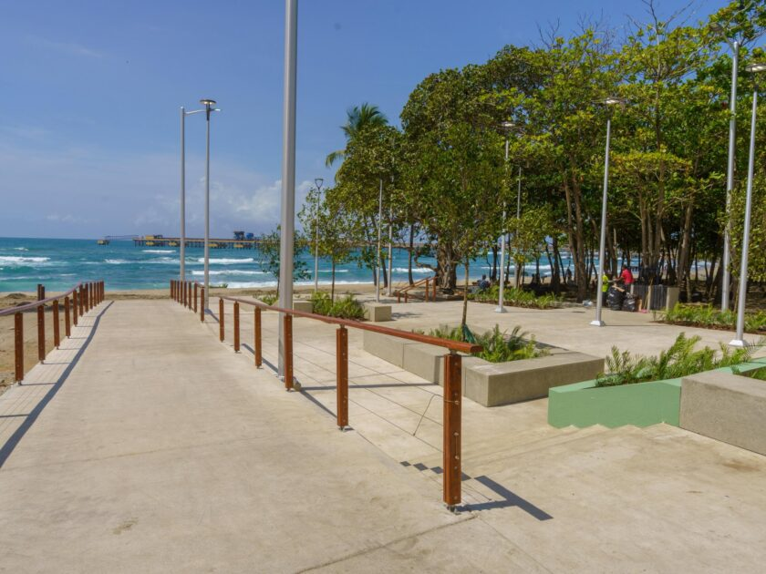
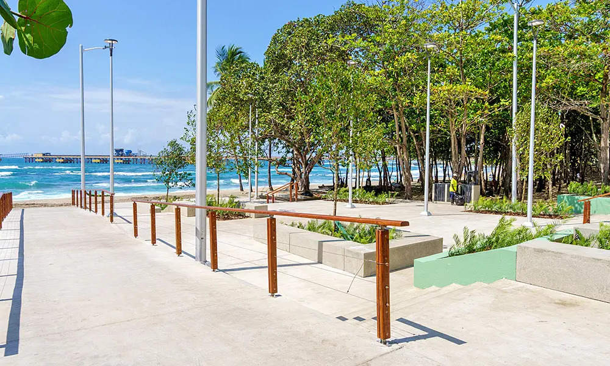
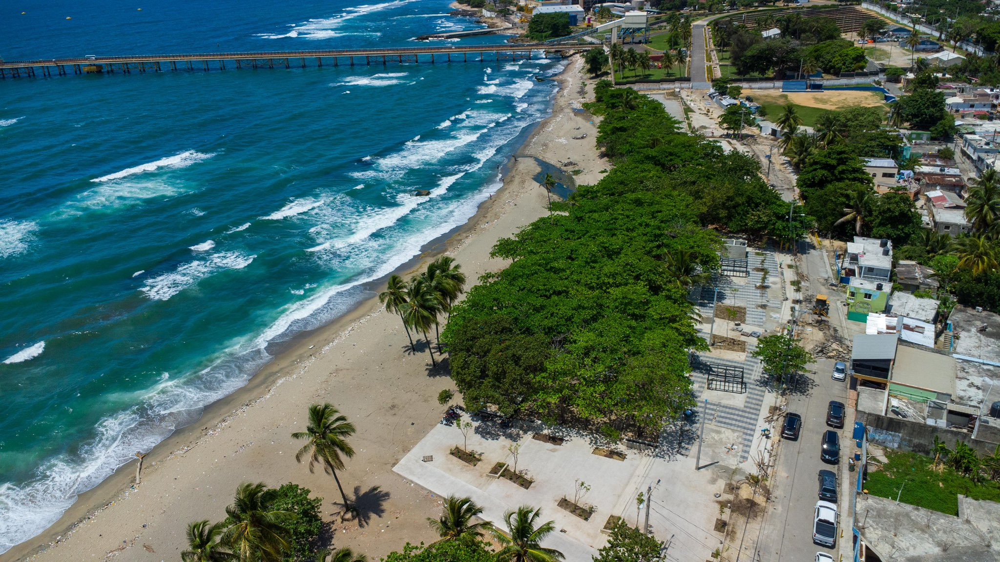
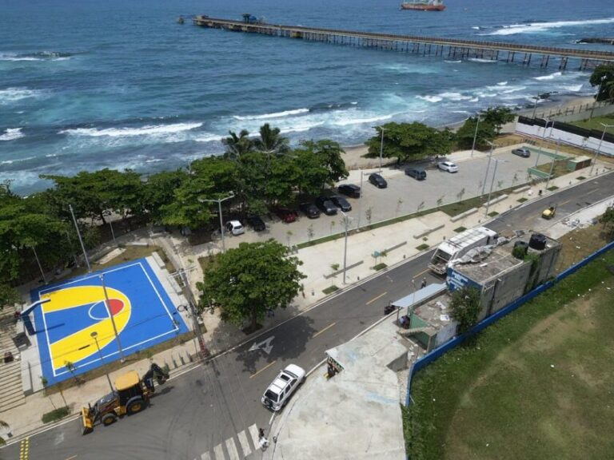
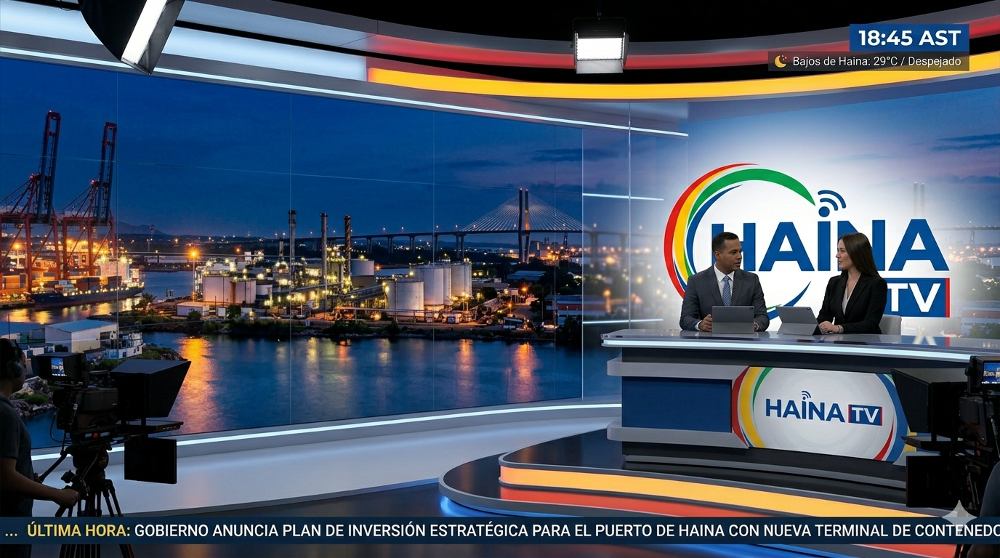
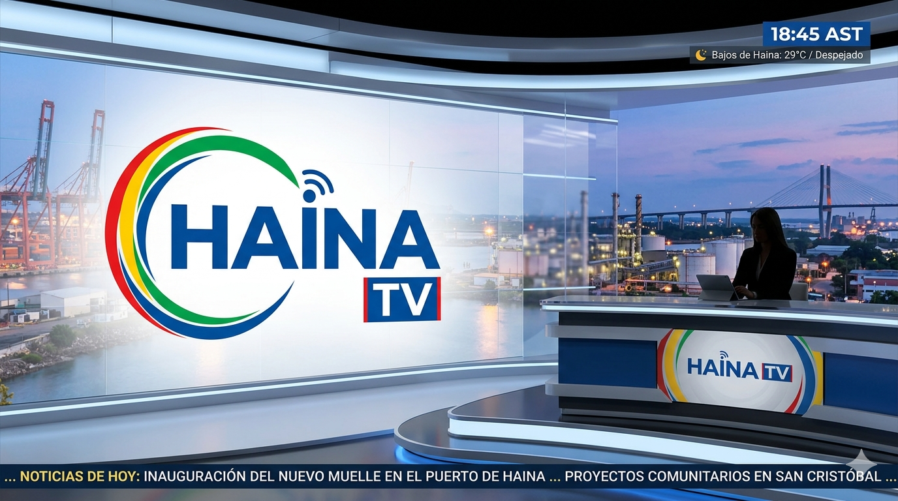
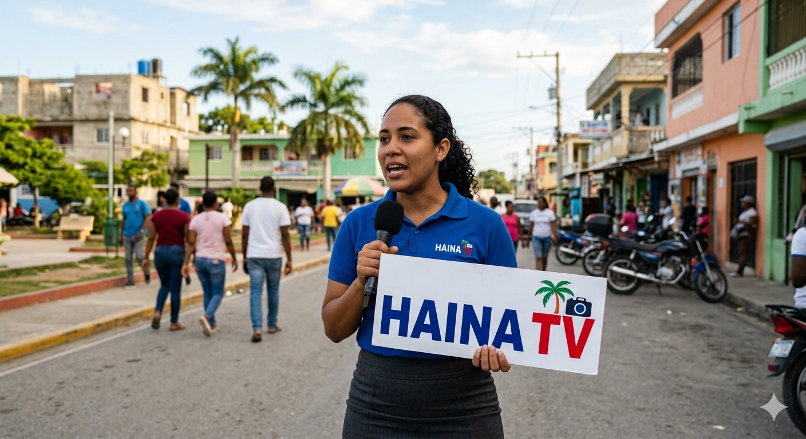

Bajos de Haina, comúnmente conocida como Haina, es un municipio industrial y portuario de la provincia San Cristóbal en la República Dominicana, situado cerca de Santo Domingo. Es un punto clave para la economía con el Puerto Río Haina y la refinería de petróleo EGE Haina, aunque enfrenta retos ambientales significativos.
Nuevo Malecón: Recientemente se inauguró el Malecón de Haina, un espacio moderno frente al mar diseñado para la recreación familiar, el deporte y el impulso del turismo local.
.jpg "Malecón de Haina")




Historia de Haina TV
Haina TV nació con la visión de llevar información, entretenimiento y cultura a cada hogar de la comunidad. Desde sus inicios, el canal se ha comprometido a ser una ventana para mostrar el talento local, las noticias más importantes y los acontecimientos que marcan el desarrollo de nuestra gente.

Con una programación variada y de calidad, Haina TV ha crecido junto a su audiencia, ofreciendo espacios informativos, programas musicales, entrevistas, deportes, eventos especiales y contenido familiar pensado para todas las edades.

A lo largo de los años, el canal se ha convertido en un medio de comunicación cercano a la comunidad, apoyando iniciativas sociales, promoviendo los valores culturales y brindando oportunidades a nuevos talentos de la televisión y la comunicación.

Hoy, Haina TV continúa evolucionando con las nuevas tecnologías, llevando su señal a más espectadores y manteniendo el compromiso de informar, educar y entretener con profesionalismo y responsabilidad.